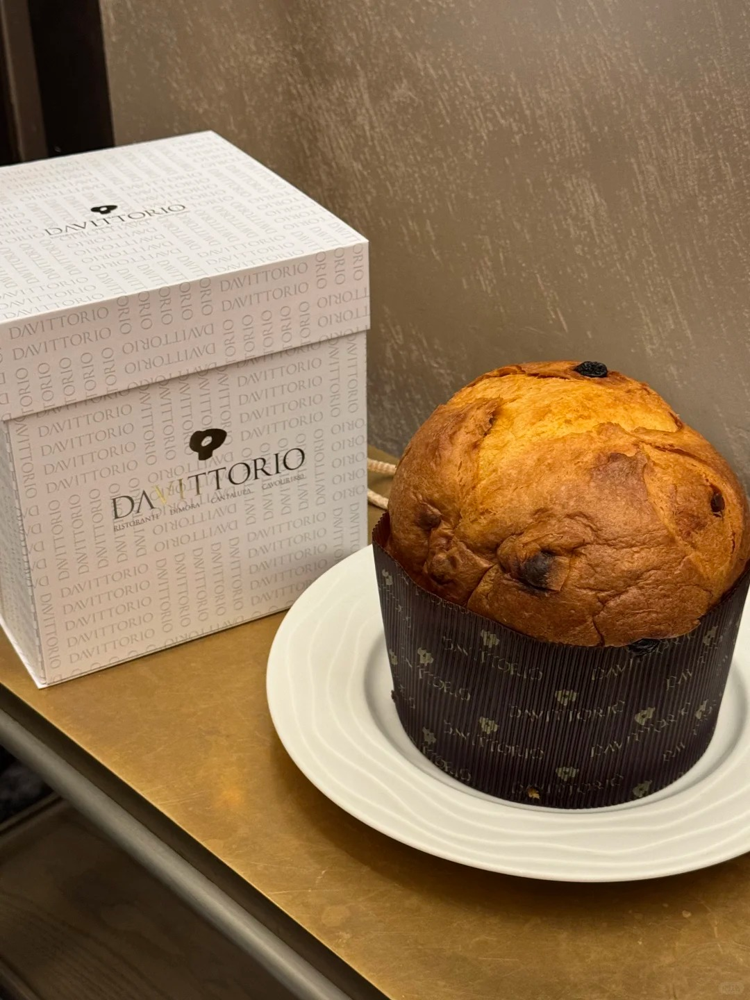
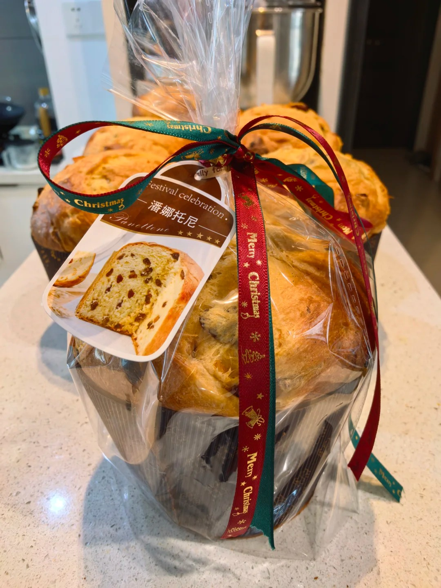
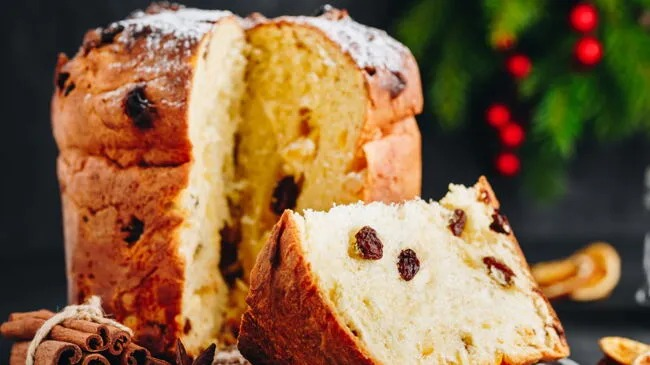

潘娜托尼



潘尼托尼面包（Panettone），又名圣诞节大面包、潘妮托妮，是一种起源于意大利米兰的甜面包。通常呈圆柱形，自底部向上扩展为圆顶状，高 12-15 公分。其制作过程漫长，需经数天类似酸面团的发酵方式，赋予面包轻盈蓬松的口感。面包中会加入多种蜜饯水果，如糖渍橘皮、柠檬皮、枸橼以及葡萄干等，现代也有加入巧克力奶油或巧克力豆的变体版本。食用时多将整颗面包切成楔形的片，可以搭配甜热饮或甜葡萄酒，如起泡酒阿斯提或阿斯蒂莫斯卡托。在意大利某些地区，人们还会配上马斯卡彭奶油酱，或佐沙巴翁焗水果一起享用。 其起源有多种传说。一种说法是，米兰的一位贵族爱上了穷面包师的女儿，为了帮助心上人，他化名为 “托尼” 在面包店工作，用昂贵食材制作出加入葡萄干、橙皮和蜜饯的甜面包，大受欢迎，后被称为 “潘娜托尼”。另一种说法是，米兰公爵卢多维科・斯福尔扎圣诞前夜盛宴上，糕点师烧焦甜点，学徒托尼用剩余材料制成新面包，公爵为其命名 “潘娜托尼”。
制作方法：